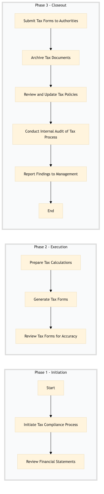

| Role | Steps |
|---|---|
| Finance Manager | 1.1 3.1 3.3 3.5 |
| Accountant | 1.2 2.2 3.2 |
| Tax Accountant | 2.1 2.3 |
| Internal Auditor | 3.4 |
| Step | Name | Role | System | Input | Output | KPI | Dec? | Exc? | Pain Point / Risk |
|---|---|---|---|---|---|---|---|---|---|
| 1.1 | Initiate Tax Compliance Process | Finance Manager | Oracle OPERA Cloud | Monthly financial data export | Tax compliance checklist | Completion within 24 hours | N | Y | Data extraction errors from Oracle OPERA Cloud |
| 1.2 | Review Financial Statements | Accountant | Oracle OPERA Cloud, SAP S/4HANA | Tax compliance checklist | Reviewed financial statements | Completion within 1 hour | N | Y | Inconsistent data between Oracle OPERA Cloud and SAP S/4HANA |
| 2.1 | Prepare Tax Calculations | Tax Accountant | Oracle OPERA Cloud, Microsoft Power BI | Reviewed financial statements | Tax calculation report | Completion within 3 hours | N | Y | Complex tax laws and regulations |
| 2.2 | Generate Tax Forms | Tax Accountant | Oracle OPERA Cloud, Microsoft Power BI | Tax calculation report | Completed tax forms | Completion within 4 hours | N | Y | Manual data entry errors |
| 2.3 | Review Tax Forms for Accuracy | Finance Manager | Microsoft Power BI | Completed tax forms | Approved tax forms | Completion within 1 hour | Y | N | Time-sensitive nature of tax reporting |
| 3.1 | Submit Tax Forms to Authorities | Finance Manager | Microsoft Power BI, Salesforce | Approved tax forms | Confirmation of submission | Completion within 2 hours | N | Y | Electronic filing system issues |
| 3.2 | Archive Tax Documents | Accountant | Oracle OPERA Cloud, SAP S/4HANA | Approved tax forms and confirmation of submission | Archived tax documents | Completion within 1 hour | N | Y | Data storage compliance |
| 3.3 | Review and Update Tax Policies | Finance Manager | Oracle OPERA Cloud, Microsoft Power BI | Tax calculation report and confirmation of submission | Updated tax policies | Completion within 1 day | N | Y | Changing tax laws |
| 3.4 | Conduct Internal Audit of Tax Process | Internal Auditor | Oracle OPERA Cloud, Microsoft Power BI | Tax calculation report and confirmation of submission | Audit report | Completion within 2 days | N | Y | Resource constraints for internal audits |
| 3.5 | Report Findings to Management | Finance Manager | Microsoft Power BI, Salesforce | Audit report | Management report | Completion within 1 day | N | Y | Effective communication of audit findings |
A structured process document for tax compliance and reporting at a Marriott full-service hotel using Oracle OPERA Cloud PMS and other key systems.